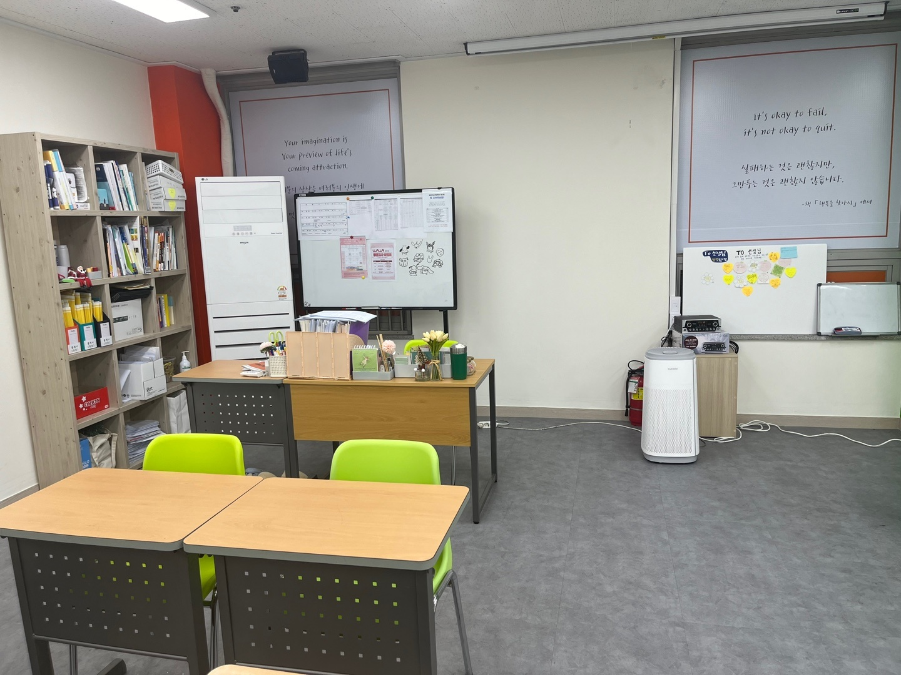
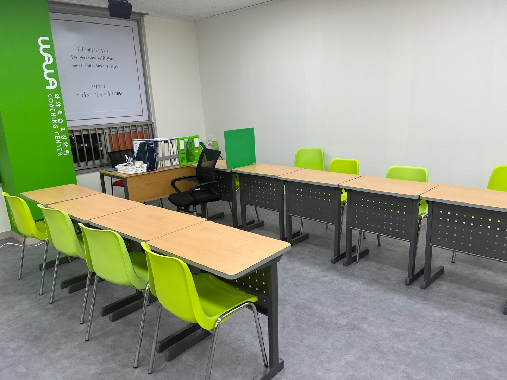
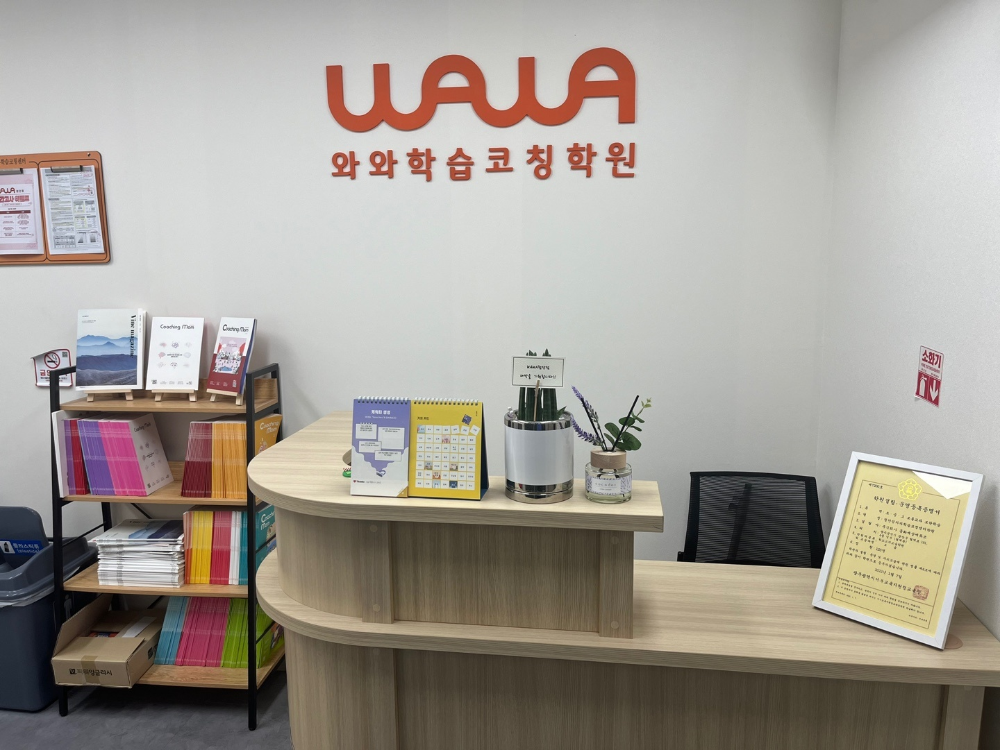

안녕하세요, 광주 광산구 월계동 첨단지구의 와와학습코칭 첨단점입니다. 월계로에 있는 건물 4층 센터로, 월봉초·월계초·첨단초 아이들부터 월봉중·천곡중, 장덕고 학생들까지 오가는 곳입니다.
오늘은 교실 오른쪽 창문 이야기부터 드리겠습니다. 블라인드에 이런 문장이 크게 적혀 있습니다.
"It's okay to fail, it's not okay to quit.
실패하는 것은 괜찮지만, 그만두는 것은 괜찮지 않습니다."
좋은 말은 어느 학원 벽에나 붙어 있습니다. 그런데 이 문장은 9월, 이맘때 특히 무게가 실립니다. 중학교 1학년의 첫 시험 때문입니다.
중1, 처음 받아 드는 점수
지금 중1은 1학년 중 한 학기를 자유학기로 보내고, 학교에 따라 2학기에 처음으로 지필시험을 치르는 경우가 많습니다. 초등학교 단원평가와 달리 과목마다 점수가 나오고, 서술형도 섞입니다. (시험 시기와 방식은 학교마다 다르니 꼭 학교 학사일정과 평가 계획을 확인해 주세요.)
이때 부모님이 가장 걱정하시는 건 점수 자체보다 아이의 반응입니다.
- "나는 원래 수학 못해"라고 스스로 결론을 내려 버리는 아이
- 시험지를 가방 깊숙이 넣고 다시 꺼내 보지 않는 아이
- 반대로 다음 시험까지 한참 남았다며 손을 놓는 아이
세 경우 모두 결과는 같습니다. 틀린 문제가 그대로 다음 학년으로 넘어갑니다. 중1 2학기 수학에서 흔들린 부분은 중2 수학의 식 계산과 함수로 이어지기 때문에, 첫 시험 뒤 몇 주가 생각보다 중요합니다. 창문의 문장이 말하는 것도 이것입니다. 한 번 틀린 건 괜찮습니다. 거기서 멈추는 게 문제입니다.
시험지를 버리지 않고 다시 펴는 법
첫 사진 가운데의 이동식 화이트보드에는 표 형태의 계획표와 안내문이 자석으로 붙어 있고, 그 앞 코치 책상에는 아이들 자료를 꽂아 두는 파일꽂이가 놓여 있습니다. 시험이 끝나면 첨단점에서 하는 일은 여기서 시작합니다.
- 틀린 문제를 이유별로 나눕니다. 개념을 몰라서 틀린 것, 알았는데 계산에서 실수한 것, 문제를 끝까지 읽지 않은 것은 처방이 전혀 다릅니다.
- '모르는 것'부터 다시 풉니다. 실수는 습관 점검으로, 개념 구멍은 해당 단원으로 돌아가 채웁니다.
- 다음 시험까지 남은 주를 거꾸로 셉니다. 막연한 "다음엔 잘하자" 대신, 몇 주 차에 무엇을 끝낼지 계획으로 바꿉니다.
점수를 보고 혼내거나 위로하는 것으로 끝나면 아이에게 남는 건 기분뿐입니다. 틀린 문제를 다시 펴게 만드는 것, 그게 "그만두지 않는다"를 실제 행동으로 옮기는 방법이라고 생각합니다.
'TO 선생님' 보드가 하는 일
같은 사진의 창문 아래를 보시면 'TO 선생님'이라고 적힌 작은 보드가 있습니다. 하트와 꽃 모양 메모지가 여러 장 붙어 있는데, 아이들이 선생님께 남긴 메모입니다.
이 보드가 수업과 무슨 상관이냐고 물으실 수 있습니다. 성적이 흔들린 아이는 대개 말을 줄입니다. 얼굴을 보고 "저 이 단원 하나도 모르겠어요"라고 말하는 건 어른에게도 쉽지 않습니다. 메모지 한 장은 그 말을 꺼내는 부담을 줄여 줍니다. 코치는 그 한 줄을 실마리 삼아 먼저 말을 걸 수 있습니다.

책상이 칠판이 아니라 벽을 향해 놓인 교실
다른 쪽 교실입니다. 이 방 창문에는 "I'll support you. 응원할게, 그 누구보다 빛날 너를 위해"라는 문장이 적혀 있습니다. 앞 교실의 문장과 짝을 이루는 말입니다.
책상 배치를 봐 주세요. 한 줄은 초록 기둥 쪽으로, 다른 한 줄은 흰 벽을 따라 놓여 있습니다. 모두가 칠판 하나를 바라보는 강의식 배치가 아닙니다. 아이마다 자기 교재로 자기 분량을 해 나가는 코칭 수업에는 옆 친구와 마주 보지 않고 각자 자기 책상에 집중하기 좋은 배치입니다.
코치 책상은 창가 모서리에 있습니다. 이 자리에 앉으면 두 줄의 책상이 한눈에 들어옵니다. 시험을 망친 다음 주에 특히 필요한 게 이 시선입니다. 풀다가 펜을 내려놓는 순간, 같은 페이지를 오래 붙잡고 있는 순간을 코치가 놓치지 않아야 "여기서 또 막혔구나"를 바로 짚을 수 있습니다.

데스크에서 부모님과 나누는 이야기
입구 데스크입니다. 오른쪽 액자에는 교육청에 등록한 학원 설립·운영 등록증명서가, 왼쪽 선반에는 부모님께 드리는 Coaching Mom 책자가 놓여 있습니다.
첫 시험이 끝난 뒤 부모님과 상담할 때 첨단점은 점수보다 틀린 이유를 먼저 보여 드리려고 합니다. "수학 70점"이라는 숫자는 같아도, 개념이 비어서인지 시간이 모자라서인지에 따라 집에서 해 주실 수 있는 일이 달라지기 때문입니다.
- 개념 구멍이 원인이라면 — 집에서는 문제를 더 풀리기보다, 아이가 그 개념을 말로 설명해 보게 하는 것이 도움이 됩니다.
- 실수가 원인이라면 — 풀이를 끝까지 쓰는 습관이 필요합니다. 답만 맞히는 연습은 오히려 실수를 굳힙니다.
- 시간이 원인이라면 — 시간을 재고 푸는 연습을 센터에서 따로 잡습니다.
첨단점 찾아오시는 길
와와학습코칭 첨단점은 광주 광산구 월계로 191, 404호에 있습니다. 월봉초·월계초·봉산초·산월초·첨단초·신용초와 월봉중·천곡중 학생들이 오가는 첨단지구 안이고, 고등학교는 장덕고로 이어지는 학생들이 많습니다.
학습 진단과 상담은 무료입니다. 첫 시험 결과를 받고 아이도 부모님도 마음이 복잡하시다면, 시험지를 들고 오셔서 틀린 문제부터 같이 펴 보셔도 좋겠습니다.